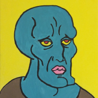
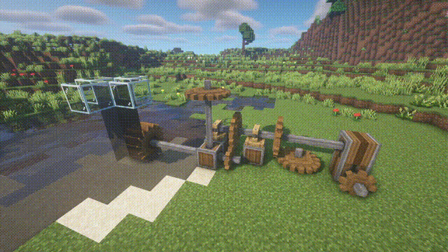
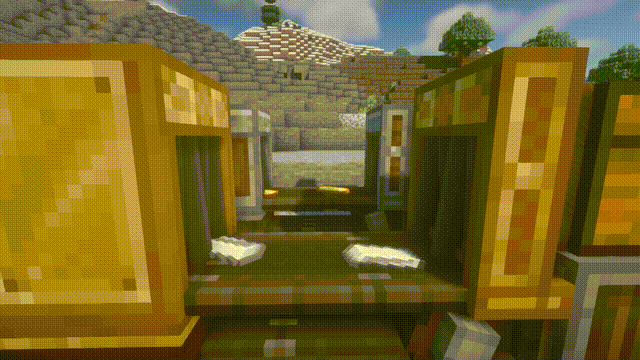
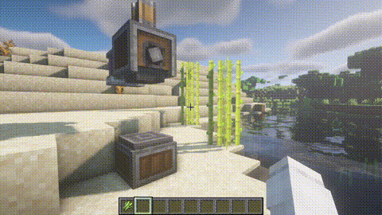
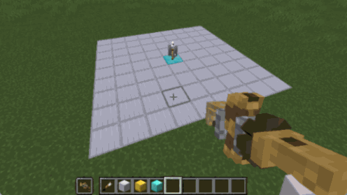
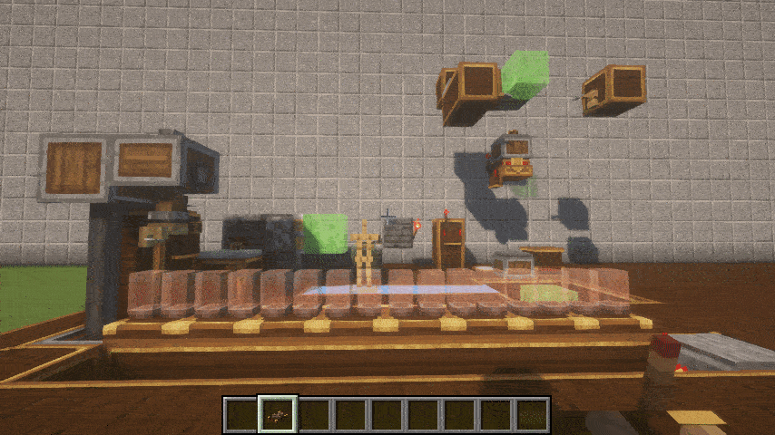
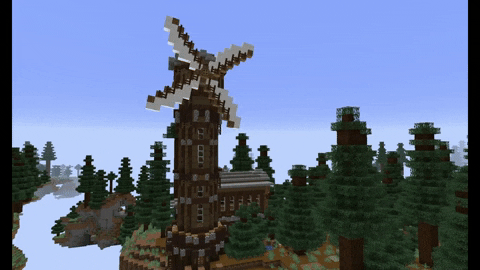
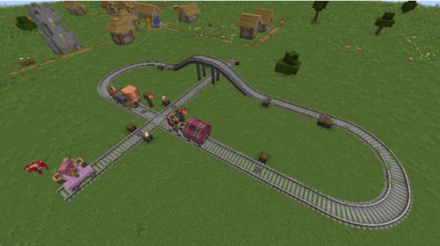

模组属性对比
活跃
开源
机械动力
Create
科技
资源
能源
存储
物流
道具
安全
红石
食物
模型
指南
破坏
建材
指令
Forge:
1.19.2/ 1.18.2/ 1.18.1/ 1.18/ 1.17.1/ 1.16.5/ 1.16.4/ 1.16.3/ 1.16.2/ 1.16.1/ 1.15.2/ 1.14.4
Fabric:
1.19.2/ 1.18.2
Quilt:1.19.2/ 1.18.2
simibubi 程序，创始人
Jozufozu 程序
Kryppers 美术
TropheusJ Fabric分支开发者
AlphaMode Fabric分支开发者
Snownee 程序,默默的BUG修复者
LeastReality 美术
bumble_dani 美术
Zelophed 程序
Grimmauld 程序
tterrag 程序，内容更新
evanthebruce Resident Nitwit
 voxel_dani 美术
voxel_dani 美术
模组介绍
机械动力(Create) 是一个围绕着建筑、装饰和机械的新兴模组,所添加的元素旨在为玩家提供全新的建筑与自动化体验,并尽可能多地 为玩家预留自定义空间。在机器与能源方面,模组做出了极大的创新。机器不再由传统科技模组中乏味的电线供能, 而是需要玩家搭建机械传动系统驱动。加工过程也不再是枯燥的,机器可以直接与世界中的物品交互,并且加工时有着 精美的动画。模组还具有独创的动态结构系统,可以使世界中的方块结构作为整体运动,进行各种自动化,并且有着 真实的物理效果。
- 0.3.1引入了全新的“思索”教学系统,鼠标对着物品按住W 即可打开生动流畅的情景教学,使得玩家可以轻松掌握玩法。
-
0.5的蒸汽动力更新中,Create
再一次以超多的高质量新内容令广大玩家赞叹,这些内容包括：蒸汽动力系统,在提供一种新的动力的同时为模组增
添了更多工业气息（取代了原熔炉引擎）；翻牌显示器系统,提供高度可自定义且便捷的信息追踪和显示功能,动画
也是非常的浪漫；以及最为重磅的铁路系统,Create设计了一种独立于原版铁轨和矿车的铁路交通系统,玩家可以
在三维空间中自由搭建具有平滑曲线的火车轨道,更令人赞叹的是在这些轨道上可以实现与很多物流模拟游戏相同的
模拟现实铁路的列车运行逻辑——玩家可以在铁轨上设置车站,为每辆自动驾驶列车设置运行时刻表,并通过铁路信号
系统保障多辆列车在轨道中的安全运行——当然,列车应用了机械动力经典的动态结构系统,玩家可用方块自由搭建想
要的列车,并且与之前的矿车结构类似,列车可以搭载物品和流体的仓储、可以搭载作业元件（动力钻头、动力锯等）
,并且最为奇妙的是,开发者们还实现了列车穿越下界传送门以及无需区块加载也可运行（列车仅能运行不能与世界
交互）的功能
这也能实现的吗,进一步增强了铁路系统的趣味和可玩性；最后,此次更新还加入了不少趣味性和装饰 性方块,并且所有的内容都保持了Create一贯的高美观高易用设计理念,可见开发者不仅奇思妙想丰富,还具有相 当扎实的开发能力以及相当的匠心。蒸汽动力版本再一次成功将Create的趣味性和可玩性提高了一个档次,并且让 玩家们感觉到这一传奇模组所具备的无限潜力。。
模组目前仍在持续开发中,但已经具备了完整的游玩内容,稳定性高,且不断有新的更新。同时模组有汉化团队实时跟进汉化,保证优秀的游玩体验。 模组的内容覆盖非常全面,具体概括如下：
能源系统
这是机械动力的创新所在,相比于简单粗暴的电线,由齿轮和传动杆 组成的传动系统更加复杂也更加有趣。
物流系统
物流系统是科技模组不可或缺的一部分,机械动力在这方面并没有落入俗套。物品乘着传送带在帘门之间穿梭也是充满美感的一件事。
矿物处理
粉碎并清洗矿物！科技模组的老一套,不过用的是新方法。使用旋转的
粉碎轮 直接粉碎矿物,完全没有任何让人感到见多生厌的 GUI
和进度条。别把自己扔进去了
情景教学
有史以来最先进*的
游戏内教学系统,用生动流畅的实际场景说明模组内容,完全避免了说明书枯燥乏味和不够详细的问题。每个方块都有一个或多个专属的教学场景可供观看,保证玩家可以轻松掌握。*怎么吹都不为过吧

更多配方
大量与原版兼容以及扩展原版的配方,让游戏体验与原版紧密结合
实用工具
科技模组少不了的小玩意,批量放置方块(v0.3.2a+仅限创造)、蓝图系统、对称建筑，都不在话下。
红石拓展
无线传输红石信号、可微调的拉杆、T 触发器……许多生电玩家梦寐以求的红石元件都能在这里找到。
动态结构
这是非常难得的内容,没有几个模组真正做好了这种东西。想象一下,可以乘坐的摩天轮和旋转木马,甚至是可以在车上走动的多方块火车——这些都是可行的,请看 宣传片！或者到 动态结构 页面查看。
火车系统
高度可自定义且美观的轨道运输系统,拥有可自定义的平滑曲线轨道,完善的铁路信号和运行逻辑系统,在这方面机械动力完全不亚于一些专业物流游戏,并且列车可以在卸载的区块运行和穿越下界传送门。
支持情况
各版本支持情况
简略介绍模组的支持情况。Forge 版概括自作者官方公告,具体信息请以 官方发布为准,其中详细解释了支持计划以及理由。v0.3.2 后,Create Forge需要飞轮前置模组。
| Forge | Fabric/Quilt | |
|---|---|---|
| 1.19.2 | 完全支持（更新所有新内容） | 跟进 Forge 版 |
| 1.18.2 | 完全支持（更新所有新内容） | 跟进 Forge 版 |
| 1.14.x ~ 1.18.1 | 部分支持（仅更新关键修补） | 无支持计划 |
| 1.12 及以下 | 无支持计划 | 无支持计划 |
最新版本
| Forge | Fabric/Quilt | |
|---|---|---|
| Minecraft 版本 | 1.18.2 | 1.19.2 | 1.18.2 | 1.19.2 |
| Create 版本 | 0.5.0e | 0.5.0f | 0.5.0g | 0.5.0g |
| Flywheel 版本 | 0.6.5 | 内置 | 内置 |
关于汉化
近期 Create v0.5 更新后短评区涌现了大量自告奋勇进行翻译的志愿者,然而非常遗憾的是,由于不知道最直接且有效的贡献方式是在官方仓库提交 Pull Request,这些志愿者付出的劳动大多成为了无用功。为了避免再次发生此类闭门造车的惨剧,请各位有意帮助 Create 进行中文本地化汉化的志愿者在开始工作前,前往官方仓库寻找由百科 Create 管理组（也不一定是）创建的 Pull Request,并与所有志愿者协作完成汉化。如果没有发现当时 Create 版本的汉化 Pull Request(一般不可能,版本更新后管理组会第一时间创建 PR),可以自己创建一个,前提是自己熟悉 Github 的使用方式以及有关 PR 的基本工作流程。